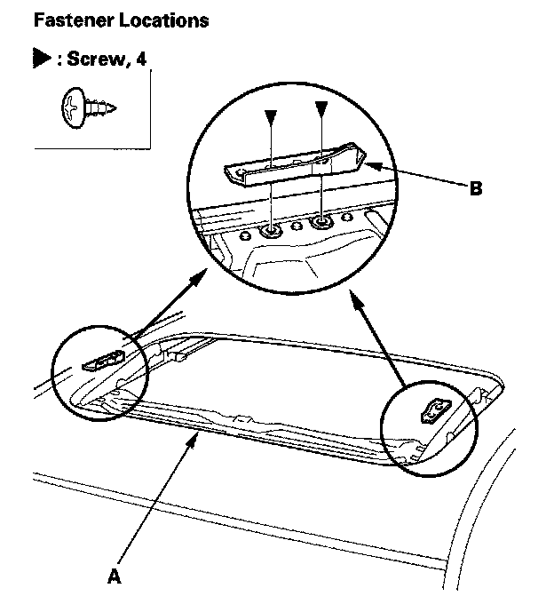
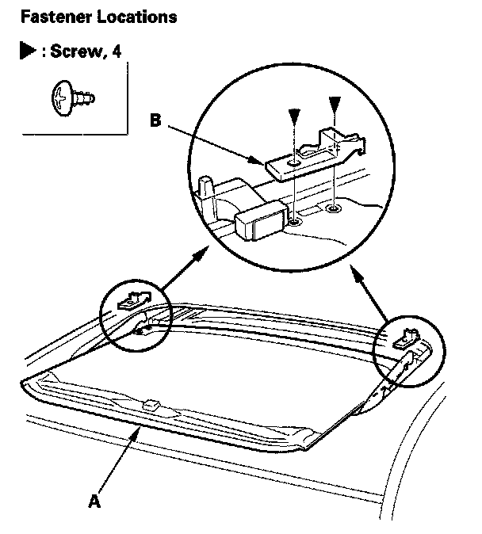
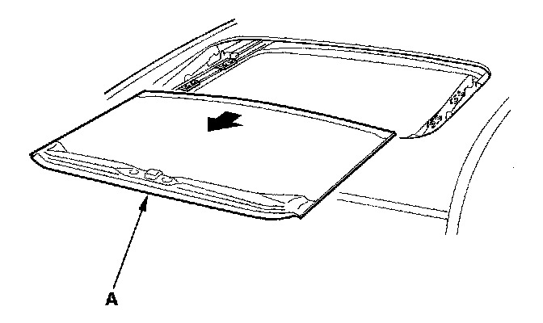
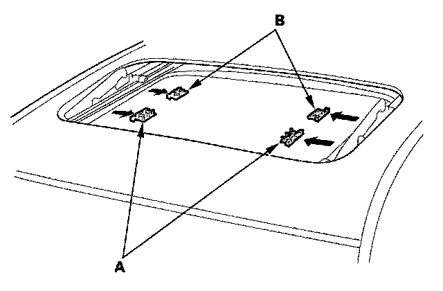

Sun Shade: Service and Repair
Sunshade Replacement1. Remove the drain channel.

2. Slide the sunshade (A) until you can see both sunshade slider spacers (B).
3. Remove the screws, then remove both spacers.

4. While lifting the front portion of the sunshade (A), move the sunshade forward until you can see both sunshade rear hooks (B). Do not damage the sunshade and hooks.
5. Remove the screws, then remove both hooks.

6. Remove the sunshade (A).

7. Remove both front sunshade base sliders (A) and both rear sunshade base sliders (B).
8. Install the sunshade in the reverse order of removal, and check the glass position adjustment.
9. Check for water leaks. Let the water run freely from a hose without a nozzle. Do not use a high-pressure spray.